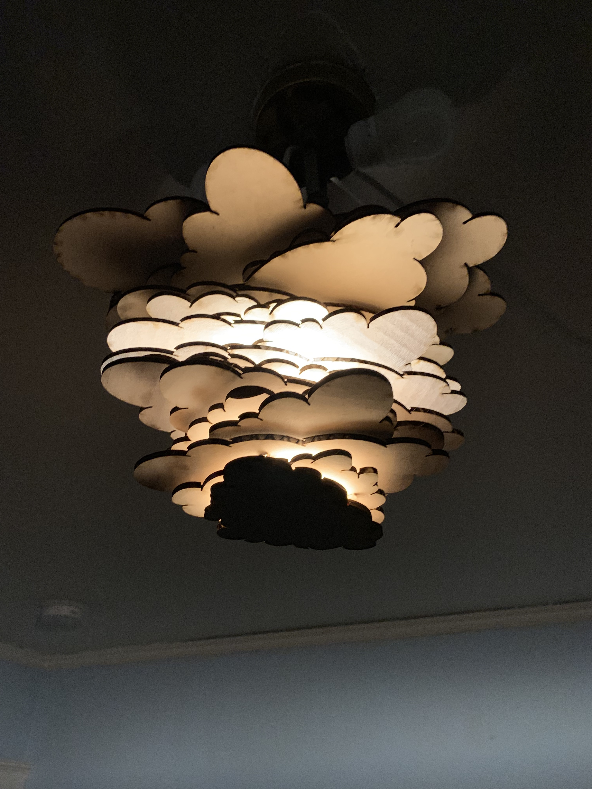
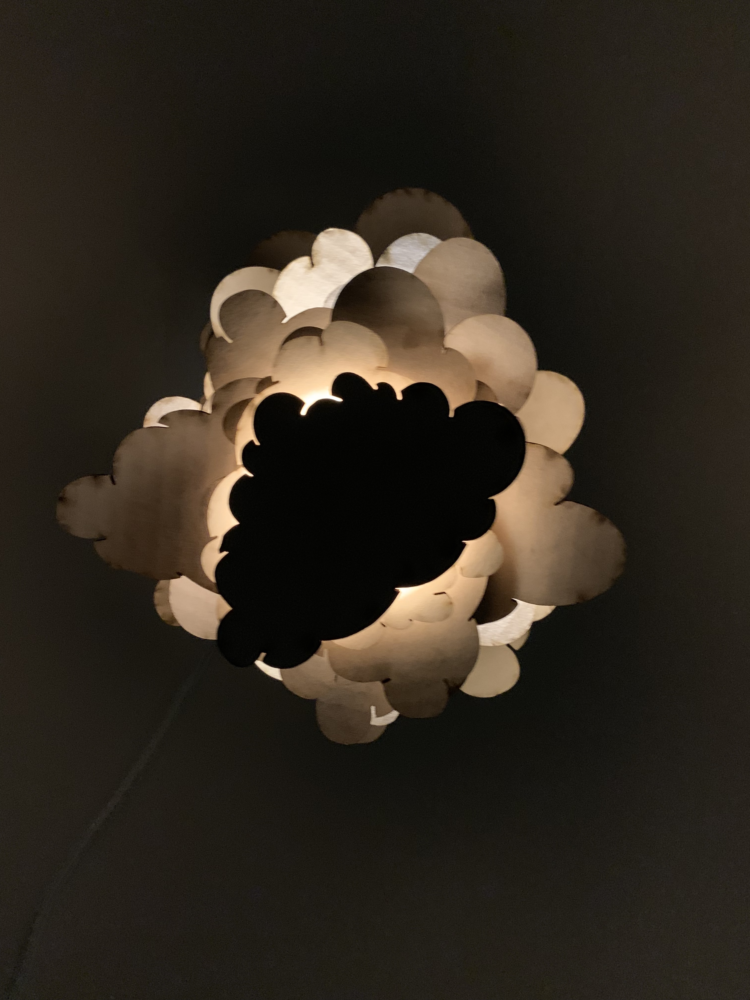
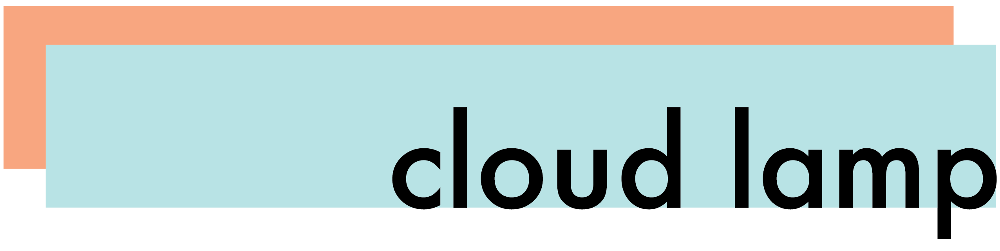

design
this is a lamp that I designed and laser cut out of cardboard. the motif of the lamp is clouds, and I played with how the light shines through the cardboard to illuminate certain parts of the clouds. three cardboard rods hold the lamp together in the center and create a cylindrical opening to fit the lightbulb. they also space out the clouds so that light shines out between them.
process
the first iteration of this lamp had one cloud cutout and raindrops hanging from said cloud. ultimately, I moved away from this design because I wanted to play more with the light shining through different parts of the cardboard.
materials & software
laser cutter, adobe illustrator, cardboard